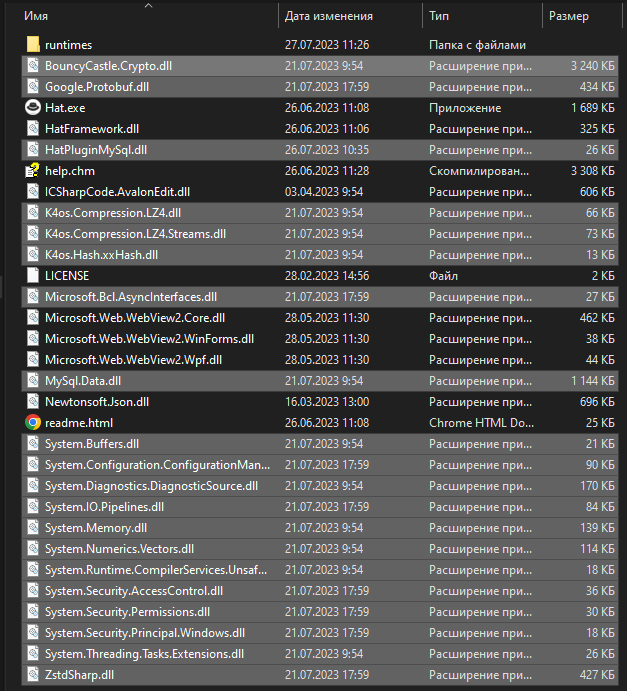

Installing the plugin HatPluginMySql
1. Download and install the browser Hat
link: https://github.com/SomovStudio/Hat/releases
2. Download the plugin HatPluginMySql
link: https://github.com/SomovStudio/HatPluginMySql/releases
3. Unpack the archive HatPluginMySql-1.0.0.zip

4. Copy the contents of the plugin folder to the root of the Hat browser folder

When copying, you may be asked about replacing existing files.
In this case, it is recommended to select "Skip these files".

As a result, the following files should be in the root of the folder

This completes the installation of the plugin!
Created with the Personal Edition of HelpNDoc: Easily create CHM Help documents